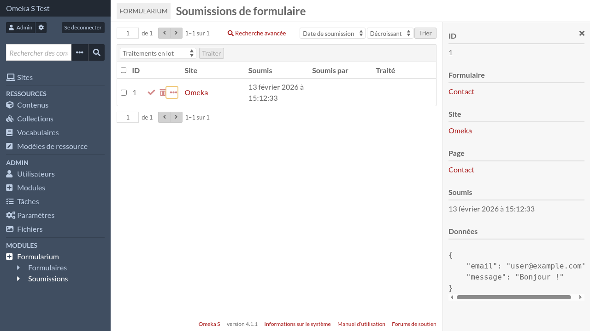

Soumissions de formulaire
Pour consulter les soumissions de formulaire, allez sur l’interface d’admin et cliquez sur « Formularium » dans le menu de navigation, puis sur « Soumissions de formulaire » (dans le menu de navigation également).

Les détails de chaque soumission peuvent être consultés en cliquant sur le lien « détails » (les trois points horizontaux).
Les soumissions peuvent être marquées comme traitées et supprimées, une par une ou par lot.